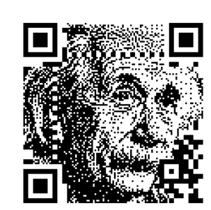
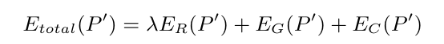

Nome: João Pedro Cosme da Silva / Cartão 00314792
O trabalho a ser desenvolvido tem como objetivo a implementação da técnica Halftone QR Codes. Está técnica, tem como objetivo produzir QR Codes esteticamente apelativas, enquanto mantém sua legibilidade por ferramentas de scan.
Abaixo, seguem os resultados esperados ao aplicas está técnica a um QR Code e a uma imagem alvo:

O escopo deste projeto é o desenvolvimento de um programa baseado em Rust, a partir de uma imagem base e um texto, produzir um QR code legível onde a imagem base possa ser claramente percebida. Ainda se propõe uma interface gráfica para a inserção das entradas, bem como para observar os resultados.
Entradas padrão para o algoritmo, serão utilizadas as bibliotecas padrão da linguagem Rust.
Para isto, será utilizada a seguinte biblioteca para Rust : QR Code. Visto que a criação do QR code não é parte do escopo do paper, aqui também será utilizada uma biblioteca para sua geração.
A imagem base, para sua utilização correta no algoritmo, deverá ser transformada em uma imagem Halftone. Uma imagem Halftone é uma imagem que representa artefatos continuos através de pontilhados. Para tanto, o paper utiliza o algoritmo apresentado em Structure-aware error diffusion (Chang et al. 2009). Visto a complexidade do método utilizado, a proposta inicial é a utilização de métodos mais clássicos de error diffusion, baseados em convolução, para a obtenção deste resultado.
Baseado na imagem halftone produzida pelo passo anterior, deve-se ainda obter o Importance Map da imagem obtida. O paper utiliza o método visto em Image Abstraction by Structure Adaptive Filtering, que se baseia na aplicação sucessiva de filtros para a obtenção deste resultado. A proposta inicial é a tentativa da utilização deste método, mas um resultado parecido pode ser obtido através de obtenções de gradiente e filtros passa alta, que servirão de alternativas.
O algoritmo apresentado pelo paper se baseia em separar a imagem em blocos 3X3, manter o pixel central intocado e em seguida verificar qual substituição dos demais pixeis realiza o equilibro entre 3 equações definidas pelo paper. São elas:
$Er$ :Energia de Reliability, representa o quanto um QR code ainda é legível após a mudança. Maximiza a legibilidade do QR Code.
$Eg$: Energia de Regularização, tenta reduzir a diferença entre a imagem halftone produzida e o QR code criado.
$Ec$: Penalização para a troca das cores originais, penaliza a substituição se as cores forem diferentes que as originais.
De forma que o problema se torna a minimização da seguinte equação:

Onde lambda é a importância relativa da energia de legibilidade.
| Data | Previstas |
|---|---|
| 06/03 até 12/03 | Obtenção de QR Code, Obtenção de ImMap, Obtenção de HalfTone |
| 12/03 até 17/03 | Modelagem de Equações para Balanceamento de Reliability e Regularization. Minimização das equações |
| 20/03 até 25/03 | Testes, correção de Bugs e desenvolvimento de Slides |